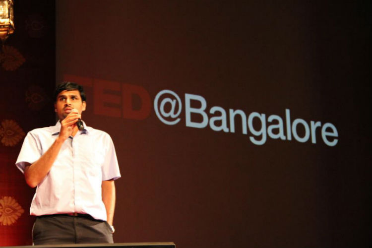

I am a Techie at heart
I do what I love and I love what I do. I have been fascinated by computers since I was 15 and continue to purse my interests in this field.
I am excited by various aspects of computer systems. My PhD and masters theses dealt with the architecture and design of memory systems for datacenters. For over 5 years in the industry across Goldman Sachs, Intel and Arm, I have worked on data center virtualization/containers, HPC compilers/libraries
I am excited by various aspects of computer systems. My PhD and masters theses dealt with the architecture and design of memory systems for datacenters. For over 5 years in the industry across Goldman Sachs, Intel and Arm, I have worked on data center virtualization/containers, HPC compilers/libraries
An avid edurance sport enthusiast, always striving to be better!

My Running diary archives some memorable moments.
Personal Bests - 5K (22mins), 10K (48mins),
Half Marathon (1:55hrs), Full Marathon (4:17hrs),
100k cycling (4:42hrs)
I swear by the Nike Pegasus shoe lineup and Merida Cyclocross Bikes!
I also enjoy trail walking, hiking and scrambling across Scotlands coastal paths, lochs and munros
Personal Bests - 5K (22mins), 10K (48mins),
Half Marathon (1:55hrs), Full Marathon (4:17hrs),
100k cycling (4:42hrs)
I swear by the Nike Pegasus shoe lineup and Merida Cyclocross Bikes!
I also enjoy trail walking, hiking and scrambling across Scotlands coastal paths, lochs and munros
I like to inspire and be inspired

I am a technology evangelist and firmly believe technology can be used for greater good of mandkind.
I like to travel and visit places

I travel to places around the world to appreciate history, people and cultures - 25 countries and counting.
A handy cook in the kitchen
I enjoy routine cooking and experimenting with new vegan/vegetarian recipes.
I used to review restaurants around Bangalore on Zomato.
I used to review restaurants around Bangalore on Zomato.